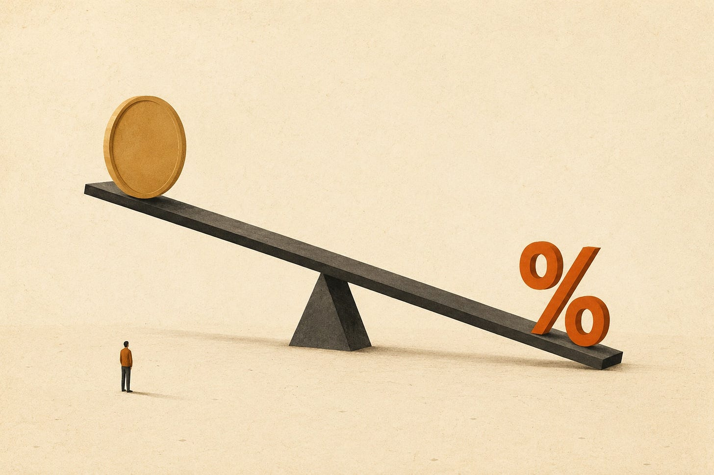
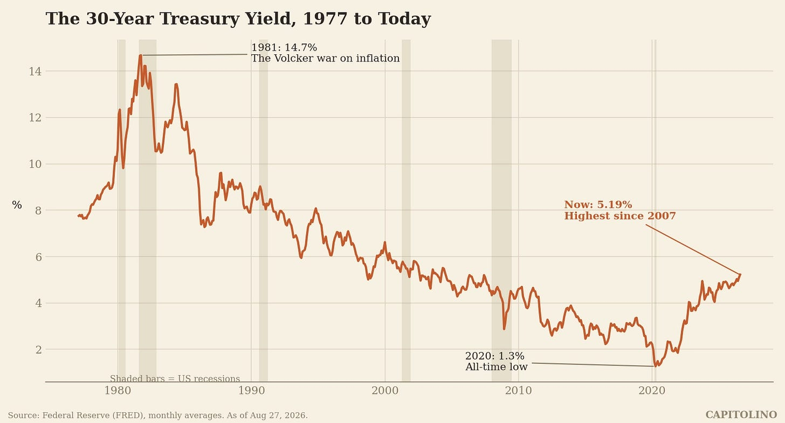
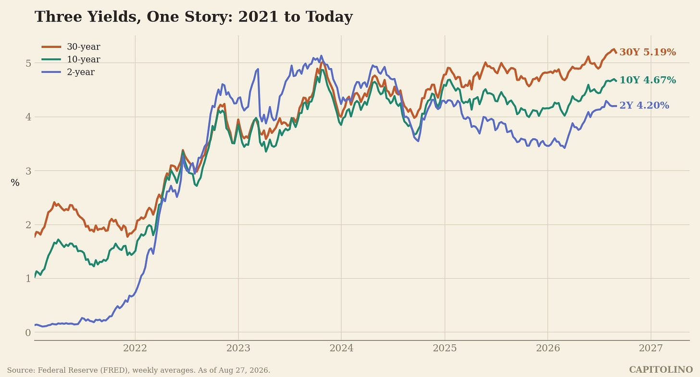
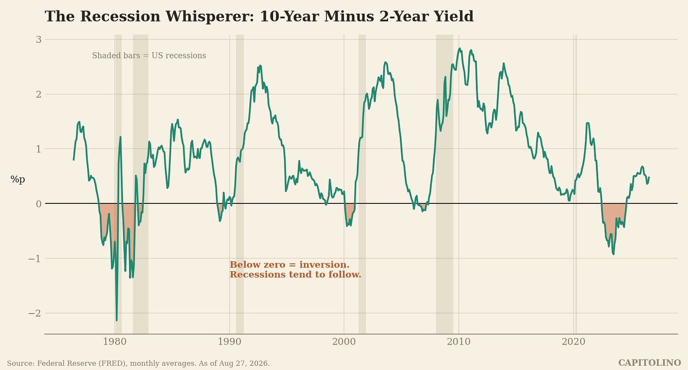

There is a number that quietly runs a huge part of your life.
It helps decide what your mortgage costs. It decides whether your grandmother’s pension is healthy. It decides how much the US government pays just to keep the lights on. And this summer, it climbed to its highest level in almost twenty years.
That number is the yield on the 30 year US Treasury bond. As of late August 2026, it sits around 5.2 percent, after touching 5.31 percent, its highest point since 2007.
Most people have never thought about it for a single second. Let’s fix that. By the end of this article, you will understand what this thing is, why it moves, and why the smartest investors on Earth watch it like a heart monitor.
Part 1: What is a 30 year Treasury, actually?
Start with the basics. The US government spends more money than it collects in taxes. Every year. To cover the gap, it borrows.
It borrows by selling IOUs called Treasuries. You give the government money today. It promises to pay you interest along the way, and to give your money back at the end.
The only real difference between Treasuries is how long you wait to get your money back.
A 2 year Treasury pays you back in 2 years. A 10 year Treasury pays you back in 10. And the 30 year Treasury, the longest standard bond America sells, pays you back in 30 years.
Think about what 30 years means. A baby born today will be an adult with a career before that bond matures. Whoever buys it is making a bet on what America looks like in 2056.
That is why the 30 year is special. It is the purest expression of long term trust in the United States. And the yield, the interest rate the market demands to make that bet, is a live measurement of that trust.
Part 2: The seesaw
Here is the one mechanical rule you need. Bond prices and bond yields sit on a seesaw. When one goes up, the other goes down. Always.

Why? Imagine you bought a bond that pays 3 percent forever. Then new bonds come out paying 5 percent. Would anyone pay full price for your old 3 percent bond? No. Your bond’s price falls until its effective payout matches the new reality.
So when you hear that yields are rising, translate it in your head: people are selling these bonds, and prices are falling.
Which raises the obvious question. Everyone says US Treasuries are the safest asset in the world. Who is selling? And why?
Part 3: A short history of the long bond

Look at this chart. It is one of the great economic stories of the past half century, told in a single line.
On the left, the terrifying peak. In 1981, the 30 year yield hit almost 15 percent. Inflation had been eating America alive for a decade, and bond buyers demanded enormous compensation. Fed chairman Paul Volcker crushed that inflation with brutally high interest rates. It caused two recessions. It also worked.
What followed was a nearly 40 year slide. Inflation fell, the world got richer and older and hungrier for safe assets, and yields drifted down, down, down. In 2020, in the depths of the pandemic, the 30 year yield touched 1.3 percent, the lowest ever. Investors were lending America money for three decades and asking for almost nothing in return.
Then the line turned. Post pandemic inflation, giant deficits, and a world with more sellers than buyers pushed yields back up. In August 2026 the 30 year touched 5.31 percent. The last time it was this high, the iPhone had just been invented.
The 40 year era of ever cheaper money is over. That single fact reshapes everything built on top of it.
Part 4: Why should you care?
Because the 30 year yield is not just a number for bond traders. It is the anchor for the price of long term money everywhere.
Your mortgage. US 30 year mortgage rates are priced off long Treasury yields plus a markup. When the 30 year Treasury climbs, mortgages climb, homes get less affordable, and the housing market cools.
Your government. America now owes over 40 trillion dollars. When old debt matures, the Treasury replaces it at today’s rates. Every uptick in yields quietly adds billions to the annual interest bill, money that cannot go to roads, schools, or tax cuts. Interest is already one of the largest items in the federal budget, bigger than defense.
Your retirement. Pension funds and insurers love long bonds because their promises are long too. Higher yields actually help them lock in income. But the journey hurts: anyone who bought at 2 percent is sitting on deep losses.
The stock market. When a safe bond pays 5 percent, risky stocks have real competition. High long yields are gravity for stock prices, especially for companies whose profits live far in the future.
One number. All of that.
Part 5: The yield curve, or three bonds telling one story
Now let’s add the 2 year and the 10 year, because each maturity has its own personality.
The 2 year is a Fed watcher. It mostly reflects what the central bank will do with short term rates over the next couple of years.
The 10 year is the workhorse. It blends Fed policy with growth and inflation expectations, and it prices most of the economy.
The 30 year is the philosopher. It cares less about next year’s Fed meeting and more about the deep questions. Will inflation stay tamed for decades? Will Washington ever control its deficits? Buyers of the 30 year demand extra compensation for that uncertainty. Economists call it the term premium. You can think of it as a trust fee.

Line the three up and you get the yield curve. Its shape is a mood ring for the economy.
Normally the curve slopes upward. Longer wait, higher yield. Makes sense.
But sometimes it flips. Short yields rise above long yields. That is called an inversion, and it is famous for one reason: it is the closest thing economics has to a crystal ball.
Part 6: The recession whisperer

This chart shows the 10 year yield minus the 2 year yield, going back to the 1970s. When the line dips below zero, the curve is inverted.
Look at what happens after each dip. The shaded bars are recessions. Inversion in 1979, then recession. 1981, recession. 1989, recession. 2000, recession. 2006, recession.
Why would this work? An inversion means investors believe short term rates are unusually high, high enough to break something, and that the Fed will be forced to cut them. The bond market is essentially voting that a downturn is coming.
The record is spooky but not magic. The 2022 to 2024 inversion was the deepest and longest in four decades, and the US economy kept growing anyway. Some economists argue the signal got distorted after years of central banks buying bonds. Maybe. Or maybe the clock just ran slower this time. Nobody knows for sure, and anyone who claims certainty here is selling something.
Part 7: What is happening right now
Today’s situation is strange in a specific way, and this is the part worth understanding.
The curve has un-inverted. Short yields are back below long yields: roughly 4.2 percent on the 2 year, 4.7 on the 10, 5.2 on the 30. On paper, that looks normal and healthy.
But look at how we got here. The curve did not normalize because short rates fell a lot. It normalized because long yields rose a lot. Traders call this a bear steepening, and it carries a very different message.
When the long end rises on its own, the market is not saying growth will boom. It is saying: lending to this government for 30 years feels riskier than before, so pay us more. More debt supply from 40 trillion dollars and counting. Inflation stuck above 3 percent instead of the promised 2. And fewer eager buyers, as Japan and other longtime lenders deal with rising yields at home and keep more money there.
This is not just an American story. In 2026, long term yields hit multi decade highs in Japan and across Europe too. All over the world, patient money is demanding a bigger trust fee.
Governments are responding. The US Treasury has even been buying back some of its own long bonds to steady the market, and yields dipped when it stepped in. That helps at the margin. It does not change the arithmetic.
Part 8: What this means for you
Here is the honest summary.
The 30 year Treasury yield is the price of long term trust in America, and that price has gone up. Not to crisis levels. 5 percent was perfectly ordinary before 2008. But the direction matters, because tens of trillions of dollars of mortgages, pensions, stock valuations, and government budgets were built during the cheap money era, and they are all slowly being repriced for the new one.
So when you see a headline about the 30 year yield, you now know how to read it. It is not noise. It is the world’s most patient investors, updating their bet on the next three decades, in real time.
Watch the philosopher. It tends to figure things out before everyone else.
Sources: US Treasury yield data from the Federal Reserve (FRED), as of August 27, 2026. Debt figures from the US Treasury. All charts by Capitolino from FRED data.